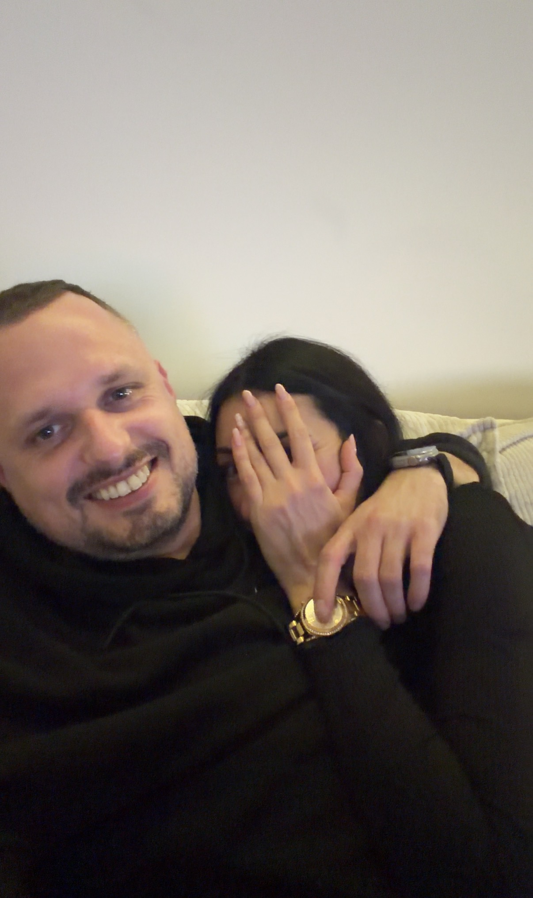
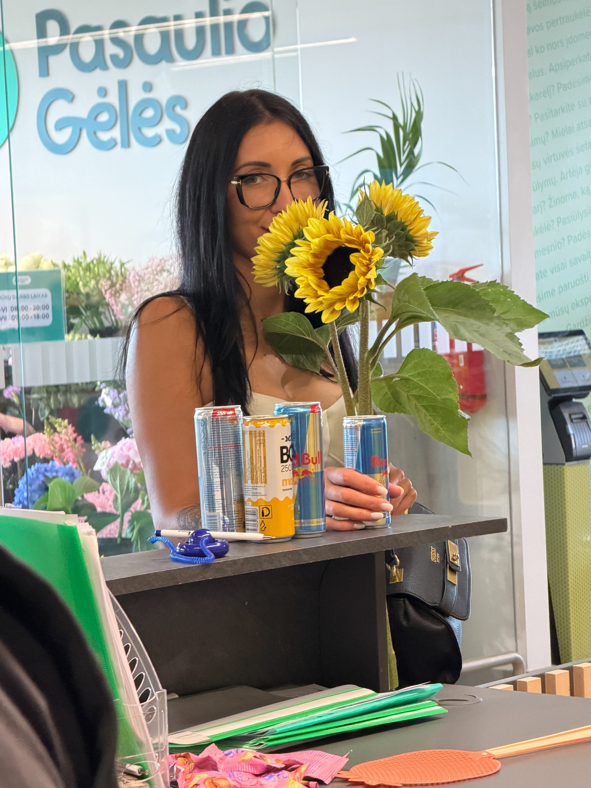
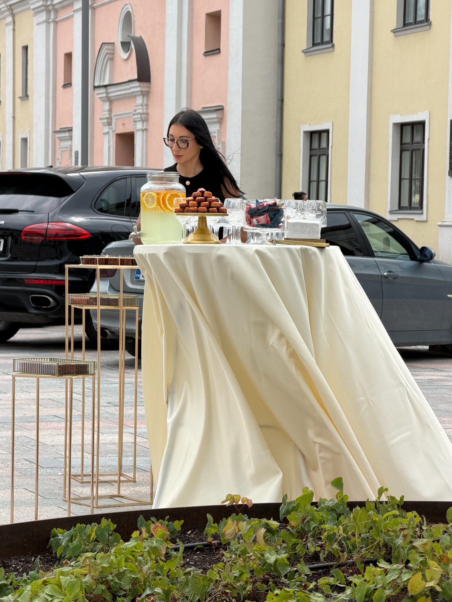
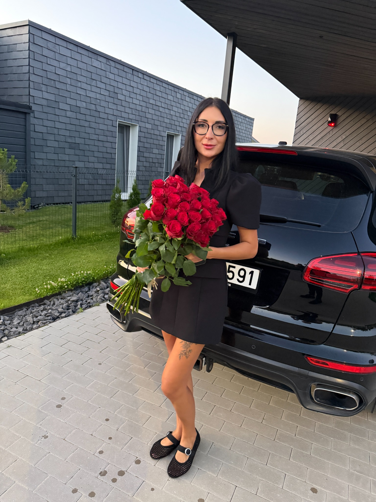
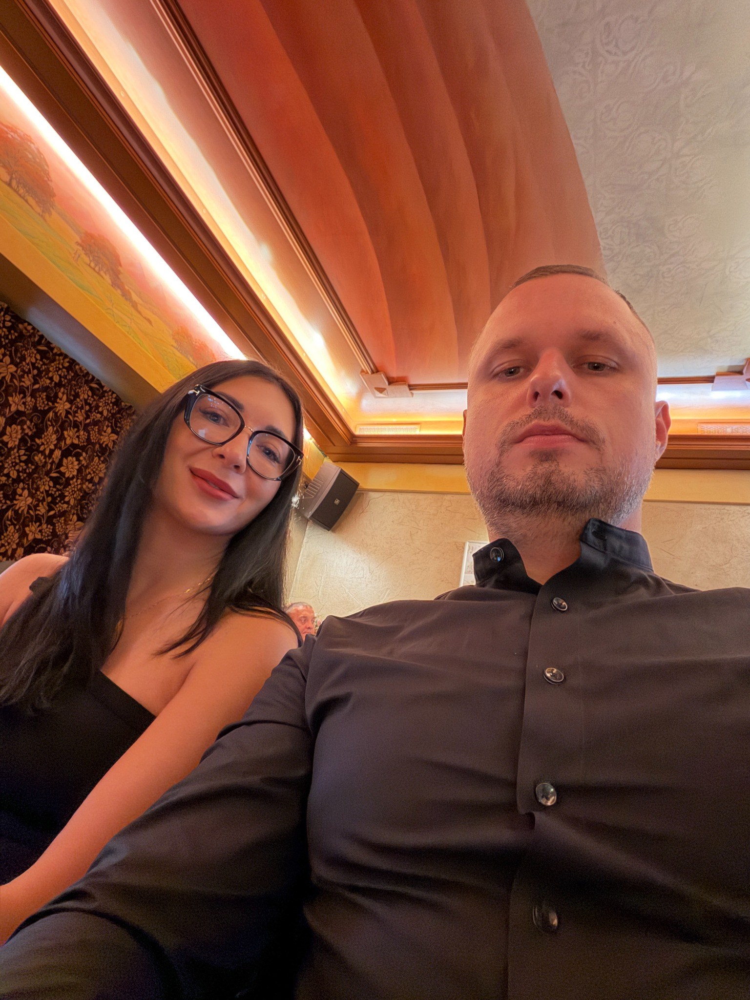
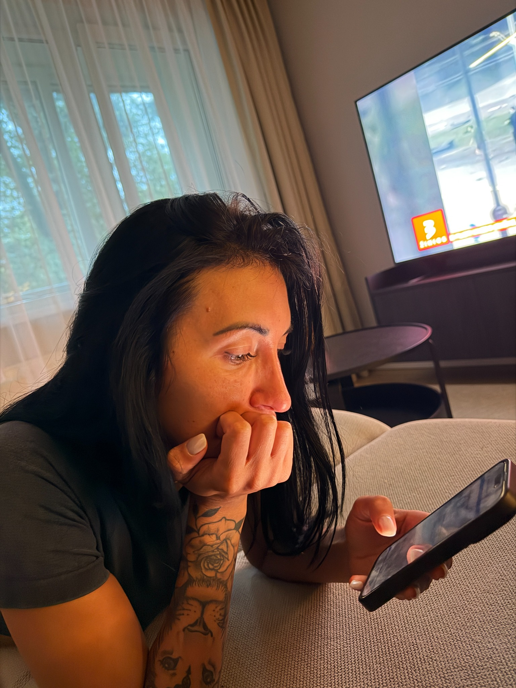
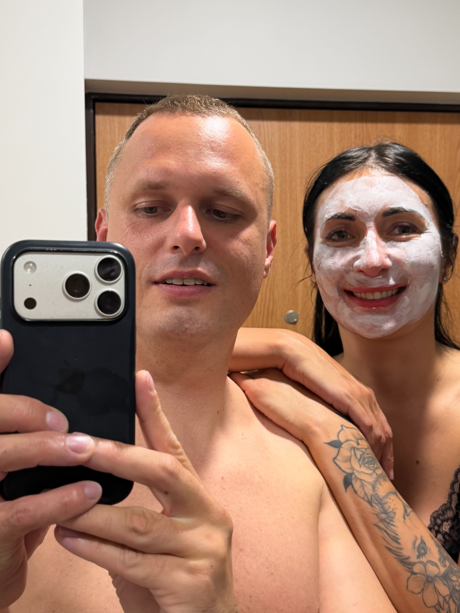
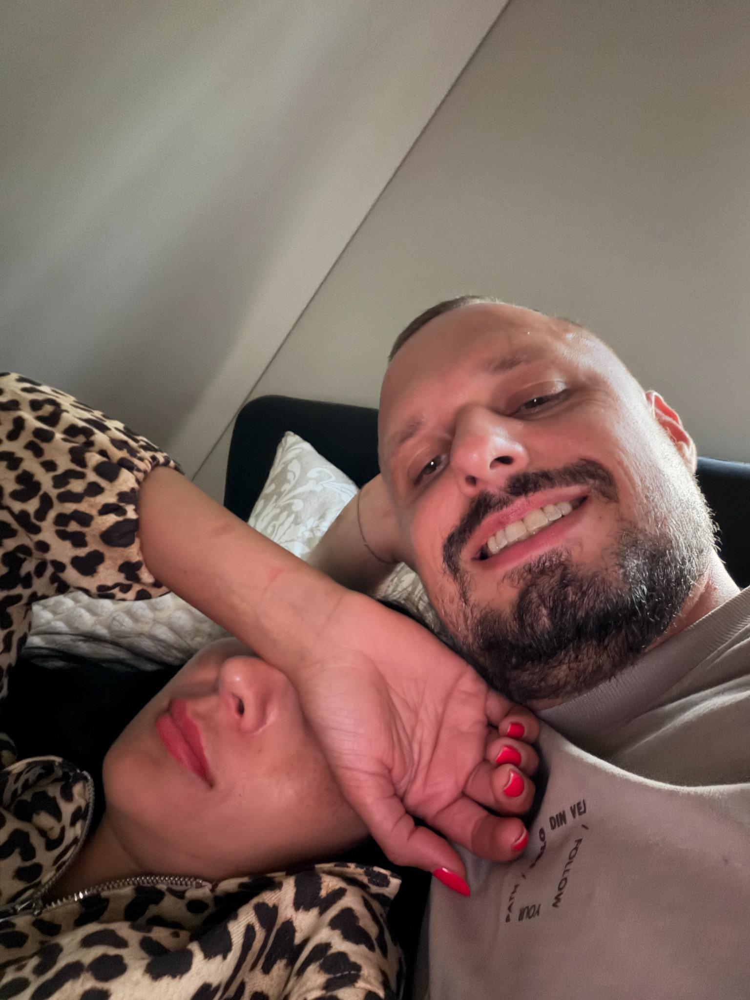
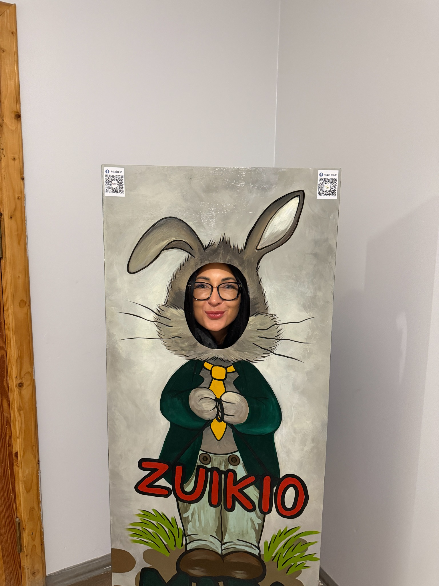

Yra žmonių,
kurie pirmą kartą susitinka prie jūros.
Yra tokių,
kurie pirmą kartą pasibučiuoja
po Eifelio bokštu.
O mes turime
savo istoriją...
Ji prasidėjo
„Maximos“ aikštelėje.

Su tavimi net pačios paprasčiausios akimirkos tampa tomis, kurias norisi prisiminti dar ir dar kartą. Tu į mano gyvenimą atnešei tiek šilumos, kad kartais net sunku patikėti, kaip stipriai žmogus gali pakeisti kito žmogaus pasaulį.Su tavimi

Tavo šypsena man visada bus gražesnė už pačias ryškiausias gėles. Joje yra kažkas, kas akimirksniu nuramina, priverčia sustoti ir tiesiog džiaugtis tuo, kad esi šalia.Tavo šypsena

Žaviuosi ne tik tuo, kaip atrodai. Dar labiau žaviuosi tavo stiprybe, švelnumu, nuoširdumu ir tuo, kaip moki būti savimi. Tu esi graži ne tik išore — tavo grožis jaučiamas visame kame.Žaviuosi tavimi

Kiekviena gėlė turi savo grožį, bet nė viena neprilygsta tau. Nes tu ne tik graži — tu turi tą ypatingą šviesą, kurią pajunta žmogus vos tik būna šalia tavęs.Tik tu

Su tavimi kiekvienas vakaras tampa ypatingas. Net paprasta vakarienė šalia tavęs jaučiasi kaip akimirka, kurios nesinori, kad kada nors baigtųsi.Mūsų akimirkos

Kartais pagaunu save tiesiog žiūrint į tave. Ir kuo ilgiau žiūriu, tuo labiau suprantu, kiek daug tavyje yra grožio, ramybės ir kažko, ko negaliu paaiškinti žodžiais.Kiekviena diena

Labiausiai myliu tai, kad su tavimi nereikia apsimetinėti. Galiu būti savimi, juoktis, kvailioti, tylėti ir vis tiek jaustis priimtas. Su tavimi gera būti tikram.Tikrumas
Net kai kvailioji, man esi pati gražiausia. Tavo juokas, tavo žvilgsnis ir tavo gyvumas yra tai, kas mano dienas padaro daug šviesesnes.Tavo juokas

Namai man nėra sienos ar vieta žemėlapyje. Namai yra jausmas. Ir kuo daugiau laiko praleidžiu su tavimi, tuo aiškiau suprantu, kad tas jausmas man esi tu.Namų jausmas
Tavo ramybė, tavo šypsena ir tavo buvimas yra tai, prie ko visada norisi sugrįžti. Su tavimi net tyla jaučiasi graži.Mano ramybė

Mano mažasis Zuiki... nežinau, kuo tave taip nusipelniau, bet kiekvieną dieną esu dėkingas, kad atsiradai mano gyvenime. Tu padarei jį šiltesnį, gyvesnį ir daug prasmingesnį.Mano Zuiki
Tu tapai žmogumi,
kurio laukiu kiekvieną dieną.
Žmogumi, su kuriuo noriu dalintis
savo džiaugsmais, savo mintimis
ir net pačiomis paprasčiausiomis akimirkomis.
Tu mane nuramini tada,
kai pats savęs nuraminti negaliu.
Tu privertei mane suprasti,
kad meilė slypi ne dideliuose gestuose...
O mažuose dalykuose,
kuriuos kuriame kartu kiekvieną dieną.
Ir kuo daugiau akimirkų
praleidžiame kartu...
Tuo labiau suprantu,
kokia brangi man esi.
Yra dar kai kas,
ką labai noriu tau pasakyti.
Tu atėjai į mano gyvenimą
visai netikėtai.
O šiandien jau sunku
įsivaizduoti jį be tavęs.
Tu atnešei į mano kasdienybę
daugiau ramybės.
Daugiau juoko.
Daugiau šilumos.
Ir tą gražų jausmą,
kad viskas tampa prasmingiau,
kai galiu tuo dalintis su tavimi.
Šalia tavęs noriu būti
geresnis žmogus.
O todėl, kad tu įkvepi mane
tokiu būti.
Kai pagalvoju apie ateitį...
Negalvoju apie didelius planus
ar tobulas dienas.
Galvoju apie rytinę kavą.
Apie ilgesnius apkabinimus.
Apie vakarus, kai juokiamės
iš dalykų, kuriuos suprantame tik mes.
Apie visas tas mažas akimirkas,
kurios pamažu tampa visu gyvenimu.
Ir labai norėčiau
visas jas kurti kartu su tavimi.
♥
Ačiū, kad atsiradai mano gyvenime.
Su meile,
Tavo brangiausias ❤️